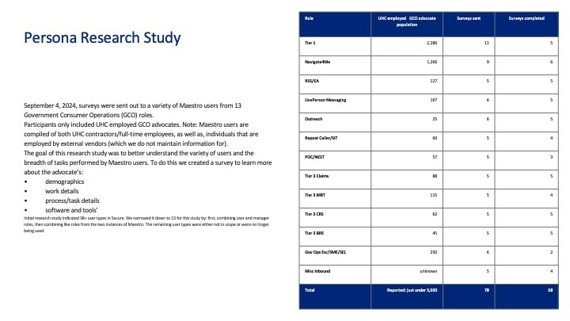
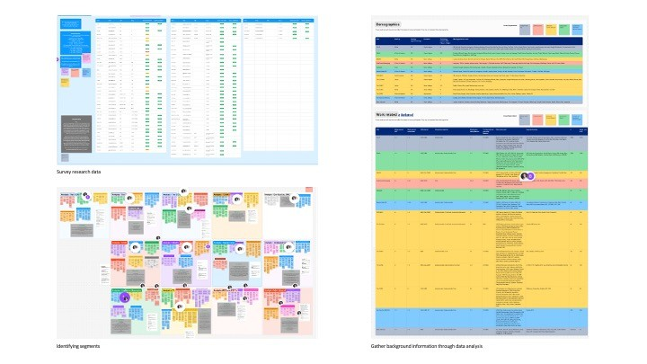
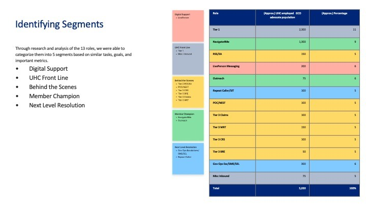

Work / Case study
UnitedHealthcare · Research & org alignmentData-Driven Personas
Operationalizing data-driven personas to align government call center strategy — and to stop six product teams from designing for six different imaginary users.

Six teams, six imaginary customers
UnitedHealthcare had highly fragmented product teams operating in silos, building features based on conflicting, unverified assumptions of who the customer was. The predictable result was feature bloat — and the same arguments re-litigated every sprint.
There were no personas at all in the Government space. I was supporting six Product Owners and six development teams simultaneously, each carrying their own mental model of the advocate on the other end of the software.
Why personas, specifically
I made the case to development teams and Product Owners on three pillars:
- Better communication and shared understanding across functions
- Prioritization — a defensible basis for what gets built first
- Informed decision-making instead of loudest-voice-wins
The goal: an authoritative, data-backed source of truth for user roles that maps cleanly across Product, Engineering and Customer Success.
Methodology & cross-functional triangulation
-
Data triangulation
I worked with a Research Specialist who reviewed my survey questions and helped run the studies, capturing both quantitative and qualitative data from 58 participants across 13 different roles. We partnered with operational specialists to gather population metrics so we knew how much of the org each archetype actually represented.
-
The synthesis framework
Affinity diagramming and color-coded clustering to collapse the archetypes into coherent groups — then validation with trainers and subject matter experts before a single persona was published.
-
Five personas, not thirteen
Thirteen role archetypes aligned into five personas that teams could actually hold in their heads.



The five
Each sheet carries a verbatim quote, a day-in-the-life summary, top tasks, longest time commitments, pain points, the tools they live in, and the metrics that role is actually measured on — plus what share of the advocate population they represent.
Operationalization & institutional adoption
The design work was the easy half. Making the personas structurally impossible to ignore was the real project.
- Integration into the SDLC — persona names were required in every Rally user story
- Physically present — printed and posted in the office, visible by default
- Change management — presented and distributed to every scrum team, architect, Product Owner and Product Manager
- A shared vocabulary — Product Owners, engineers, architects and the advocates themselves started using persona names when discussing features and ideas
Continuous discovery: the governance model
I created a standing committee of advocates representing each persona. It did three jobs at once:
- Buy-in and genuine excitement from the advocates themselves
- An expedited approval path — the people affected were already in the room
- Ongoing, data-driven research instead of a one-time snapshot
Outcomes
What I'd carry forward
The measurable wins came from adoption mechanics, not from the artifacts. If I ran this again I'd build the governance committee first and let the personas emerge from it — the approval speed alone would have paid for the study twice.